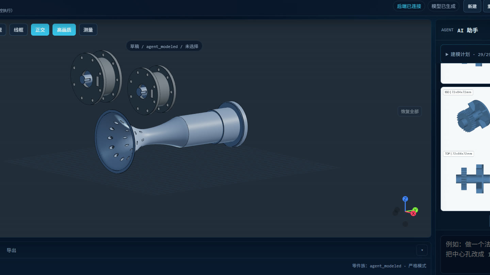

Research
The agent asks structured questions and performs engineering calculations when the task is underspecified.
Varen CAD plans a mechanical task, builds parametric B-Rep parts, checks the assembly, and exports STEP/STL. Failed geometry, feature, and interference checks are not reported as success.

The agent does not receive an unrestricted Python CAD shell. It works through constrained kernel operations and records each result.
The agent asks structured questions and performs engineering calculations when the task is underspecified.
It proposes a BOM, quantities, and key parameters. Geometry changes only after the plan is approved.
Parts are created one by one as parametric B-Rep geometry with a replayable feature history.
Feature contracts, solid validity, and assembly interference are checked before export.
Varen treats success as a program state, not a confident summary from the LLM.
Declared holes and dimensions are compared against measured B-Rep geometry. A mismatch can reject the part.
Floating or disconnected geometry is not silently archived as a finished part.
Pairs are checked for hard collisions before an assembly is accepted. Meshing zones require explicit exemption.
The packaged app supports OpenAI-compatible endpoints. If you prefer, use your own provider key.
Make a 120×120×12 mm flange with a Ø30 mm center through hole and six Ø8 mm bolt holes evenly distributed on a Ø90 mm circle. State assumptions and validation results. If any check fails, do not export it as success.
Varen is for concept design and rapid prototyping. Human engineering review remains mandatory.
There is no complete 2D drawing workflow, general mate solver, or kinematic solver.
production_ready is always false. Review dimensions, materials, tolerances, and assumptions.
The beta build targets Windows 10/11 x64. Other source-code paths are not verified.
Project files stay local, but prompts are sent to the model endpoint you configure.